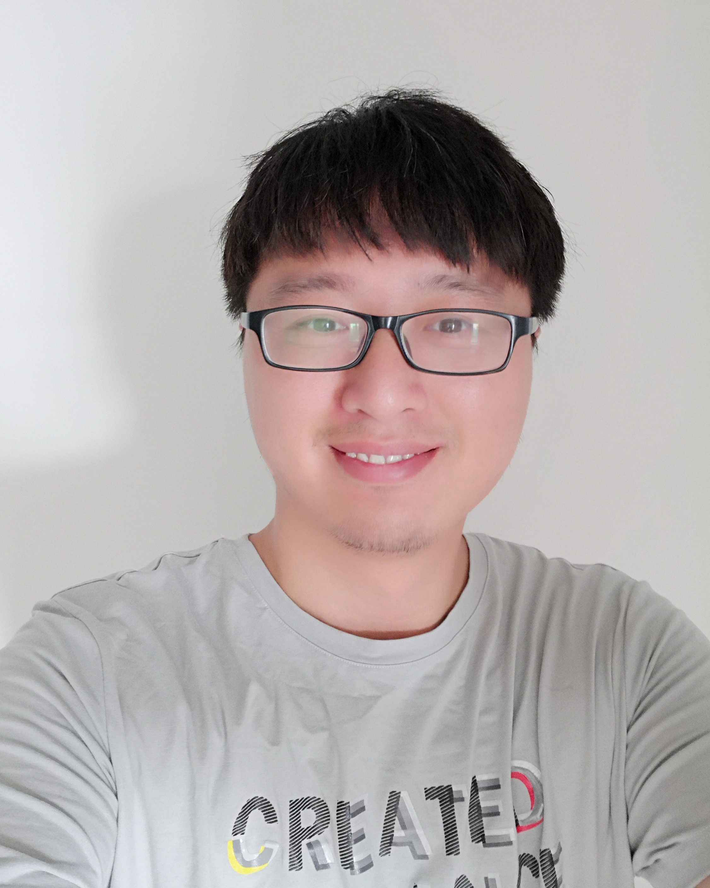

2013年4月南京邮电大学电子与通信工程专业研究生毕业。现就职于华为编程语言实验室，担任高级软件工程师。我感兴趣的领域：IoT、嵌入式软件、硬实时操作系统RTOS、轻量化脚本引擎以及面向IoT的编程语言。
以下是联系方式：
*注：更新时间为2021-04-21。下载我的CV。
职位：高级软件工程师
职责：脚本语言虚机的设计和开发，参与终端编程语言的设计和实现，领导MapleJS团队
汇报：实验室主任，LM
该项目是华为自研的全场景终端通用语言。参与了语言轻量、终端声明UI领域语言两个子项目。
该项目主要涉及物联网领域“端-边-云”的整体解决方案。负责其中“端”侧的轻量级脚本引擎MapleJS技术的开发。MapleJS是华为推出的面向物联网（IoT）设备侧应用开发的轻量化JavaScript引擎，及其配套的开发工具集。MapleJS可以运行在LiteOS物联网实时操作系统之上并支持HiLink物联网协议，使得开发者能够在资源受限的嵌入式设备上使用JavaScript进行开发；并通过提供统一的设备能力抽象接口，向开发者屏蔽硬件差异，使其更加聚焦业务实现，从而提升IoT设备应用开发效率。带领团队解决在资源受限的情况下运行MapleJS的问题并建立了以AI-LINK、Broadlink、MXCHIP等WIFI模组厂商为主的智能家居嵌入式JS应用开发生态。
职位：高级嵌入式软件架构师，软件经理
职责：架构POS软件技术栈，负责银联POS认证，领导软件研发团队
汇报：CTO
该项目是对传统POS进行深度开发，加入Android平台以便支持流行的互联支付。该POS运行了Android系统以及硬实时操作系统FreeRTOS。 主要负责开发嵌入式金融模块，构建支付安全框架，基于安全芯片开发固件，包括磁条读卡器、IC读卡器、NFC模块、SPI flash、Security Monitor，涵盖i2c、SPI、uart等接口驱动以及封装android native库和JNI 库。维护EMV交易内核，解决交易过程中产生的问题。
构建设备软件技术栈，开发安全加密芯片（国际的RSA2048、SHA256、3DES，国密的SM2、SM3、SM4）。带领团队通过银联PBOC level1、PBOC level2以及安全认证，开发和维护工厂测试固件，最终成功商用落地。
职位：嵌入式软件工程师
职责：维护Lucent RRH，基于PowerPC开发RRH嵌入式控制系统
汇报：PM
解决RRH Vxwork硬实时系统问题以及RRH各模块的优化。 维护和开发基站射频头嵌入式控制系统，C语言编程，利用clearcase进行C代码管理。基于硬实时操作系统Vxworks(rtos)，维护天线接口协议aisg，光纤传输协议cpri等模块。主要涉及3G、WCDMA、4G、TDD-LTE、FDD-LTE的RRH。开发RRH控制系统技术原理文档并对组员进行培训。
*注： RRH是手机基站远端射频头。
*注：2009年7月 ~ 2010年9月，第二次考南邮研究生并争取到了公费名额。
以下均为我学习或工作中获得的奖项：
以下均为我熟练使用的技能
感谢您花时间阅读我的简历，期待能有机会和您共事。